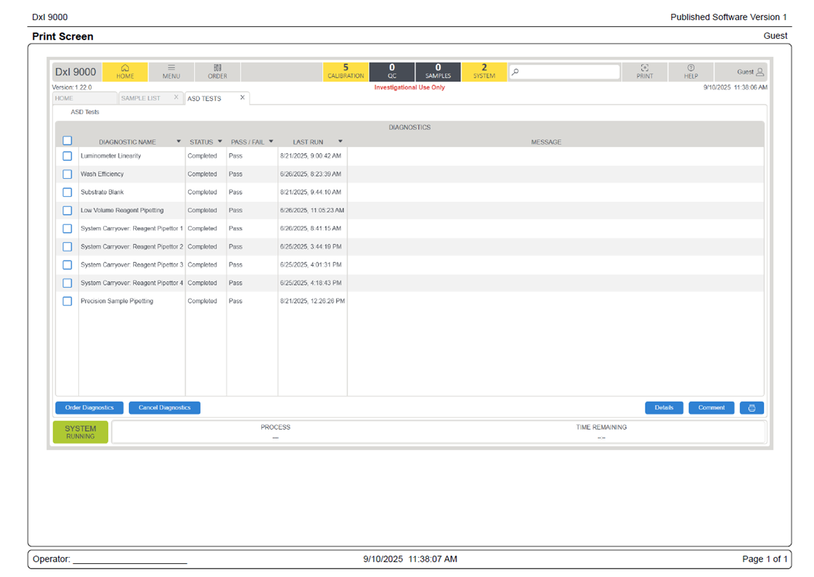

Printing ASD Tests for Verification Attachments
This topic includes information about how to print Automated System Diagnostics (ASD) tests for use as attachments for verification.
| Table of Contents |
|---|
| Example |
| Printing ASD Tests as Attachments |
Example
The following image displays an example of what you should see printed for use as an attachment for verification.
Note: Depending on the type of work order (i.e. installation, preventative maintenance, repair), the Test and Inspection Wizard may ask for multiple items of objective evidence. However, after the service activity, only the ASD Tests page (see example below) must be printed or screen-captured to show that any required ASD tests were completed with a Pass status.

Printing ASD Tests as Attachments
Perform this procedure to print ASD tests as attachments for verification.
- In the Console App go to to open the ASD Tests page.
- Perform the required tests. See the following topics for more information about which tests to perform.
- With the ASD Tests page displayed on the screen, select PRINT to open the Print Screen dialog.
- Select Save to PDF to open the Save Screenshot Report dialog.
- Select the location where you want to save the file.
- In the File name: box type the name of the report.
- Select Save to save the PDF.
- Attach the file to the service record.